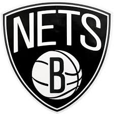

Los Brooklyn Nets (en español, Redes de Brooklyn) son un equipo profesional de baloncesto de los Estados Unidos con sede en la ciudad de Nueva York. Compiten en la División Atlántico de la Conferencia Este de la National Basketball Association (NBA) y disputan sus partidos como locales en el Barclays Center, ubicado en el barrio de Brooklyn. El equipo fue fundado en 1967 con el nombre de New Jersey Americans y comenzó jugando en la ABA. En 1968 la franquicia se mudó a Nueva York, donde adoptaron el nombre de New York Nets. Con este nombre ingresaron en la NBA en 1976. Un año después regresaron a Nueva Jersey, donde se llamaron New Jersey Nets, hasta que en el año 2012 se trasladaron a Brooklyn y pasaron a ser denominados Brooklyn Nets.
En 2004, volvieron a obtener el título de la División Atlántico,54 y después de derrotar al rival de la localidad vecina, New York Knicks en primera ronda, su carrera hacia el título de conferencia se vio interrumpida en las semifinales al ser derrotado por Detroit Pistons, a la postre campeón de la NBA. Los cuatro primeros juegos se los repartieron en partes iguales, los Nets ganaron en el quinto encuentro en Detroit en triple tiempo extra, pero cayó al siguiente partido en Nueva Jersey. Los Pistons ganaron el encuentro decisivo y se alzaron con el título de conferencia por 4-3.55 Jason Kidd, jugando con una lesión en la rodilla que requeriría cirugía al finalizar la temporada, fue contenido no permitiéndole anotar muchos puntos.
Los Pistons ganaron el encuentro decisivo y se alzaron con el título de conferencia por 4-3.55 Jason Kidd, jugando con una lesión en la rodilla que requeriría cirugía al finalizar la temporada, fue contenido no permitiéndole anotar muchos puntos.Después de esta temporada, los Nets se vieron forzados a desprenderse de Kerry Kittles y Kenyon Martin, a los Los Angeles Clippers y Denver Nuggets respectivamente, porque el nuevo dueño Bruce Ratner no tenía intenciones de pagarles el resto de lo firmado en los contratos.56 A cambio de dos jugadores claves para el reciente éxito del equipo recibieron solamente elecciones para el draft. Sin embargo, luego de un pobre comienzo de temporada en la temporada 2004-05 y no poder contar con los servicios de Richard Jefferson en toda la temporada a causa de una lesión, los Nets adquirieron al jugador estrella de Toronto Raptors Vince Carter a cambio de Mourning, que sería liberado por los Raptors (y subsecuentemente contratado por Miami Heat), Eric Williams, Aaron Williams y elecciones en el draft.
A lo largo de su historia, los Nets han logrado dos campeonatos de la ABA, dos títulos de conferencia y cinco títulos de división (uno de ellos en la ABA).2 Sus éxitos más recientes datan de 2002 y 2003, donde alcanzaron de manera consecutiva las Finales de la NBA.
 Indice
Indice